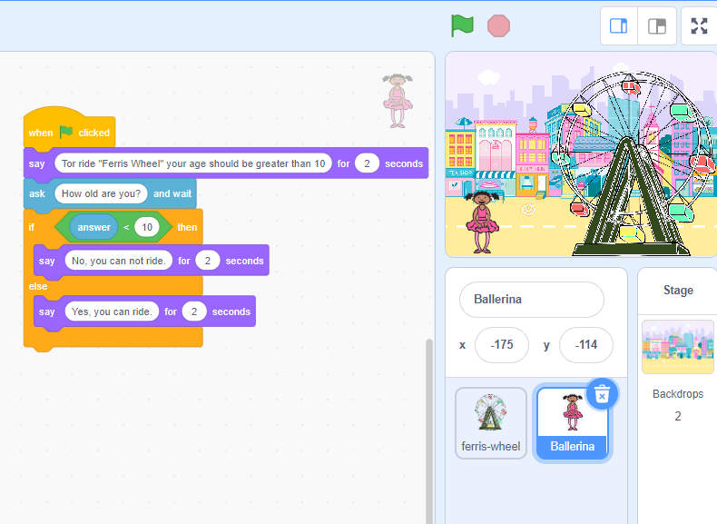
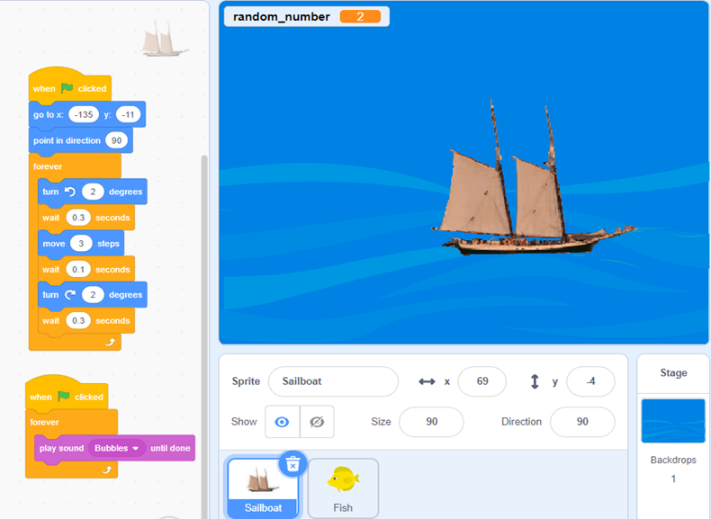
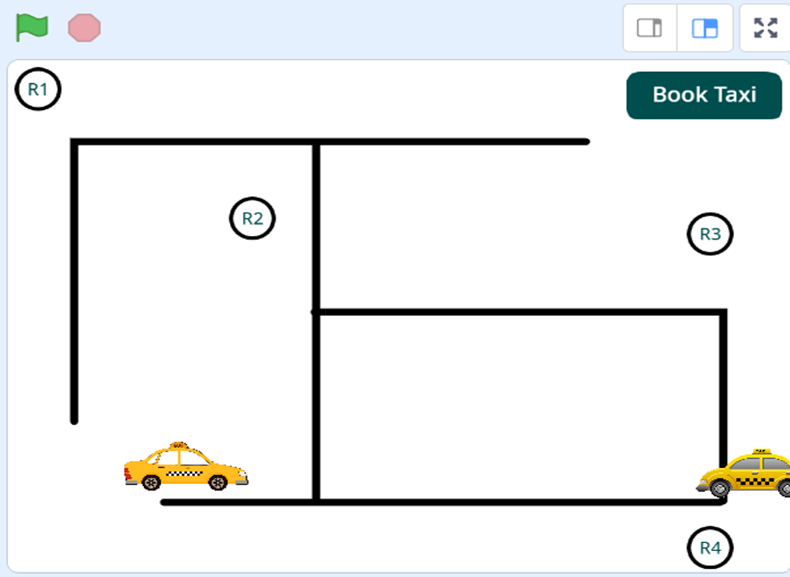

Educational Resource
Debugging with Scratch
A practical learning resource designed to help students understand debugging and problem-solving through Scratch.

About the Resource
This resource introduces students to debugging concepts through practical Scratch activities, examples and problem-solving tasks.
Designed For
Primary and Lower Secondary Students.
Focus Areas
- Understanding bugs
- Finding errors
- Problem solving
- Testing programs
- Improving Scratch projects
Book Samples
Sample Pages
A preview of activities and learning materials from the resource.



Book Introduction